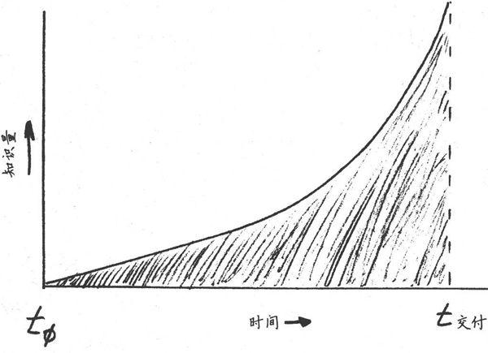
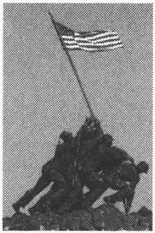
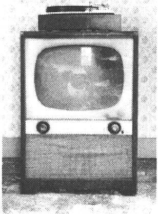
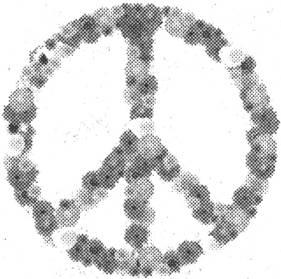
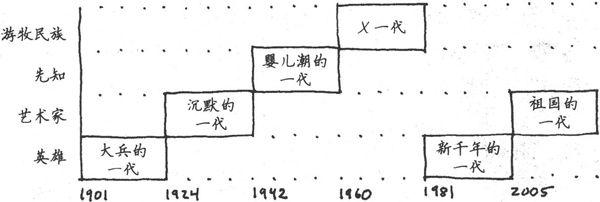
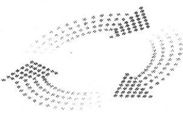

第5章 调试你的大脑
我从来都不想成为怪人，但别人都认为我想。
——弗兰克·扎帕，美国作曲家、音乐家、电影导演
直觉是伟大的，除了当它不伟大的时候。
我们不是理智的生物。
We are not rational creatures.
人们普遍认为领导者都是勤勉、有思想的决策者。他们搜集所有相关的事实，权衡取舍，然后做出富有逻辑性的、理性的决定。但实际上，基本无人遵循这种理想化的过程，即使是专家级这类硬干性的决策者〔1〕。
与之相反，我们是基于不完善的记忆和当时的情感状态来做出决策并解决问题，忽视了关键的事实，却根据发生的时间地点或者是否醒目而关注不相干的细节。特别是当这些细节非常引人注意时。
我们需要调试大脑系统。
“调试”（debug）计算机的现代定义来自于一只真正的昆虫——一只蛾子掉进了Mark II Aiken Relay Calculator的一个继电器上（见图5-1）。在运行一系列余弦回归测试时，操作员发现了一处错误，通过观察，他们找到了这只昆虫。操作人员移除了虫子，很负责任地把它订在日志手册上，这是真正意义上的调试机器〔2〕——给计算机除虫。
虽然对于硬件系统来说这是一种很好的隐喻（有时字面上也是正确的），不过调试大脑的概念有一些粗糙。但是，我们在思维方法上真的有bug，即处理信息、做出决策和评估状况时的根本错误。James Noble和Charles Weir很好地总结了这些问题。
图5-1 系统里的第一个bug（1945年9月9日）
“软件开发总是由人来完成，客户和用户也都是人，而据严格的基因检测显示，大多数管理者都至少有50％的遗传密码与智人巨蟒相同。”〔3〕
可惜的是，人类大脑不是开源软件。无人有现成的通路来查看这些代码以纠正错误，但是我会向你展示出错的地方，让你能够更明白这些错误流程对思维的影响。我们将探讨四大类问题。
□ 认知偏见：思维如何被误导。
□ 时代影响：同代人如何影响你。
□ 个性倾向：个性如何影响思维。
□ 硬件故障：大脑较老区域如何压制较聪明的区域。
5.1 了解认知偏见
认知偏见有很多种类。这些思想上的bug数量很多，它们会影响决策过程、记忆、知觉、理性思维等，Wikipedia列举了大约90种常见认知偏见。我见过一些人，他们的认知偏见都超过了这90种。
以下列举一些我个人认为值得重视的偏见。
思维定势
只是看到一个数字就会影响你随后对数字的预测和决定。举例来说，如果我不断地提到有100本书等待出售，那么我就向你灌输了一个数字。现在我卖给你一本书85美元，你就会停留在刚才的数字100上，而85听起来就好像很便宜。
基本归因错误
我们倾向于把别人的行为归因于他们的个性，而不去考虑行为发生时的情境。我们会轻易地为自己开脱（“我累了，我觉得快感冒了”）。但是，从各方面来看都非常正常的人却可能被驱使做出极端的行为，例如偷盗、谋杀和人身伤害，特别是在战争年代和个人危机时。并不是一定要处于这种极端的状况才会出错，就像我们之前看到的，情境就是一切。请记住行为经常是对情境的响应而不是基本的个性使然。
自私的偏见
这种偏见使人们相信，项目的成功是我的功劳，失败则与我无关。这种行为可能是一种个人防御机制导致的，但是请记住你也是系统的一部分——无论结果好坏。
需要定论
我们对疑问和不确定性感到不舒服——这种感觉如此强烈，我们会竭尽全力解决未有定论的问题，移除不确定性，进而得出定论。但是不确定性也是一件好事：让你的选择是开放的。像使用Big Design Up Front（BDUF）〔4〕一样，强行给出不成熟的定论，会迫使你放弃选择，易于犯错。人为宣布一项决定，例如项目的截止日期，并没有移除这种内在的不确定性，它只是一种自我掩饰。
认可上的偏见
每一个人都根据自己的成见和喜好原则来选择相应的事实。你可能会说，本书（和大多数书一样）恰好验证了作者认可上的偏见。
曝光效应
我们往往只因为非常熟悉某些事物而对它有所偏爱。这包括不再好用甚至会出错的工具、技术或者方法。
霍桑效应
研究人员注意到，人们在知道自己正被审视时，往往会改变自己的行为。当你在团队里引入一项新技巧或新工具时会看到这一点。起初，每个人都在关注——也都知道他们正在被关注——结果非常好，纪律性很高，对新事物的兴奋劲也点燃了动力。但是，随后新鲜感逐渐减弱，聚光灯也转移了，所有人都无情地回到了原来的行为状态。
虚假记忆
大脑很容易把想象的事件和真实的记忆混淆。我们易于受到暗示的影响，正如我们之前所看到的，记忆在大脑中不是静态写入的。相反，这是一种主动过程——非常主动以至于每一次读取都是一种写入。记忆会按照当前情境被不断重写：年龄、经历、世界观、关注焦点等。那是你六岁生日聚会时发生的事情吗？可能不是那个样子的，也可能根本就没有发生过。
符号约简谬论
如之前所看到的，L型非常乐于提供一个快速的符号来表示一个复杂的对象或者系统，这至少丢失了细节，有时甚至是事物的真相。
名词谬论
符号约简谬论的一种形式，以为给事物贴上标签就意味着能够解释或者理解它。但是标签只是标签，单靠命名并不会带来任何有益的理解力。“哈，他是ADHD”相比“她是共和党人”或者“他们来自夜郎国”，并没有增强理解能力。
所有这些缺陷只是个开端。我们人类不具理智的本质可以写好几本书了〔5〕。
5.1.1 预言的失败
做预测太困难了，特别是关于未来的预测。
——瑜伽·贝拉，伟大的智者、哲学家兼棒球手
符号约简是一个非常有害的问题，因为它在我们的日常分析性、系统性思维中根深蒂固。实际上，大脑处理现实复杂性的唯一方法是把庞大、复杂的系统简化为简单、易于操作的符号。这是大脑的一种基本机制，也是计算机编程和知识型工作中非常有用的机制。但是，如果将其视为理所当然的，你就会陷入符号约简谬论。
我们之前已经看到了符号约简谬论的例子。例如，当你尝试画一只人手时，L型把光线、阴影、纹理的复杂性简化为“五条线加一个棍”。这种简化被认为是把复杂的现实看做由非常基本的元素组成：柏拉图立体（platonic solids）〔6〕。
这些以柏拉图命名的理想形状提供了一套通用的、普遍理解的积木。
来来隐藏于柏拉图圈里。
The future hides in the platonic fold.
想一想孩子们玩的积木：立方体、长条、圆锥体、拱形体和圆柱体。用这些基本的形状，你可以构建许多建筑物。柏拉图的理想形状也类似，它们都是现实的简化版积木。但是这种将现实简化成理想形状的方法留下了一个洞，称为柏拉图圈（platonic fold）。可怕的命运隐藏在这个洞里，这些意料不到的事件让我们备受打击。
柏拉图圈的概念，正如The Black Swan:The Impact of the Highly Improbable［Ta107］一书中所描述的，强调了人类非常不善于从过去的事情推断未来的事情。我们总是假定事件差不多形成了一种稳定、线性的递进，原因和结果都很简单。
事实并非如此。这就是我们多数情况下难以预测未来的原因。实际上，因为我们的盲点——包括柏拉图圈，我们会发现历史上所有相因而生的事件都来源于完全意想不到的原因。
这就是书名“黑天鹅”（Black Swan）的由来。许多年来，人们以为天鹅只能是白的。因为从没有人看到过黑天鹅，科学界也认为不可能存在——直到有一只黑天鹅出现了。
意想不到的事件改变历史。
Unexpected events change the game.
作为一个团队，我们往往会错过重要的发展，因为我们关注于错误的事情或者提了错误的问题。例如，去年我清扫办公室时偶然发现了一叠20世纪早中期的杂志（我在一堆乱七八糟的网线中还发现了一个14.4K调制解调器，不过这是另外一个故事了）。
那些杂志见证了历史。一个个封面展开的都是激烈的争论，争论着那个时代最重要的事情：谁会赢得桌面战争？用户界面会基于OpenLook还是Motif？
相关性与因果性
科学研究很容易被误解，因为大多数人不善于统计分析学。最普遍的一个误解是把相关性说成因果关系。
仅仅因为两个变量相关并不能认定其中一个是因另外一个是果。比如，看看有关居住在高压线下面的家庭白血病发病率更高的报告。新闻标题甚至会说高压线导致癌症。
虽然这有可能，但是这种单一的关联性根本不能证明这个问题。其实还有许多别的潜在因素：高压线下面的房屋较便宜，因此这都是相对贫穷的家庭，也就影响了食品营养、卫生保健、早期检测等方面。看到相关性并不等同于确定了因果性。
另外，现实世界的因果关系通常不像“事件X导致事件Y”这样简单。相反，一般是X触发Y，反过来Y强化了X，X又巩固了Y，等等。更多情况下是“X和Y”而不是“X或Y”。不同事件所占的诱因比例也不同，且具有不同的强化性。甚至同一类事件在一段时间内也会具有完全不同的原因。
事实证明，这是一个错误的问题，Windows这个当时甚至不被当作竞争者的桌面系统取得了统治地位。然后就是中间件战争，谁会胜利？RMI还是CORBA？
这又是一个错误的问题，因为Web的发展很大程度上让这个问题变得没有意义。Web是典型的黑天鹅，其出乎意料的发展完全改变了游戏规则。那时，长篇累牍的分析和思考、预测和焦虑，几乎全都围绕着这个错误的问题。我们的偏见使得预测未来几乎不可能，也难以驾驭现在。
正如你所看到的，只是因为你“认为是这样”并不代表这是正确的。认清和克服自己的认知偏见说起来容易，做起来难。但是这里列举了一些有所帮助的建议。
5.1.2 “很少”不意味着“没有”
“极其不可能的巧合事件其实每天都在发生。”〔7〕最近，我们已经目睹了形形色色的灾难，从500年一遇的洪水到百年一遇的风暴，但从地质学来说，这些只是沧海一粟，这样的事件并不少见。这让人们觉得很反常，因为在他们的记忆中或者他们父母的记忆中（甚至祖父母的记忆中），这些灾难从没发生过。但是，这不意味着不会发生，也不能阻止它们一下子发生三次。
在2004年，美国人被雷电劈死的概率为1/6383844。〔8〕这听起来概率不大，是吧？但是仍然有四十六人死于雷电，尽管是六百万分之一的概率。而死于坠床的概率是上述概率的16倍，即使你可能认为这不是特别危险。虽然非常罕见，但是仍然在发生。可以更加肯定的是，每个月你都可能经历一次百万分之一的奇迹。〔9〕
黑天鹅现象警示我们不要把未观察到的或者罕见的事件认定为不可能。
真正随机的事件形成了一系列错综相连的值和独立的值，而同质和随机是两回事。举例来说，很有可能在完全随机的抽样中连续发生三次5级飓风。
诀窍18
记住标题：“很少”不意味着“没有”。
仔细观察柏拉图圈，思考一下你可能遗漏的东西。任何你忽视的细微元素都可能改变历史。
绝不说“绝不”。
Never say never.
花时间检查一下“疯狂的”异常值或者“极其不可能的”事件。如果它们真的发生了，对你意味着什么？你的行为会因此改变吗？哪些顾虑变得不再重要？哪些会变得重要？请记住，这些仍然是不可能事件，所以请不要开始囤积罐头或者防护衣。但是绝不说“绝不”。
5.1.3 推迟下结论
我们对定论的渴望意味着我们总是努力消除不确定性。但是过早地下结论减少了你的选择，甚至可能消除了成功的选择。
在软件项目或者任何一门学科中做某种探索性或创新性的项目时，一般每天你都会学习一点新知识。你会逐渐了解用户、项目本身、团队和技术，如图5-2所示。

图5-2 随时间变化的项目知识
这意味着在项目的末尾时你会达到智力高峰，而在项目开始时则是最无知的。因此，你想尽快做决定吗？不。你想尽量延迟下结论，以便于随后有更好的决策。但是，这意味着关键事情可能会在很长时间内处于未决状态，会让许多人非常不舒服。
顶住压力。你会做出决策，事情会解决，只不过不是今天。
诀窍19
适应不确定性。
敏捷软件开发包含了适应不确定性的内容。在早期，你无法知道项目结束日期究竟是哪一天。你不能百分之百地确信哪些功能会出现在下一个迭代中。你不知道一共会有多少个迭代。这些都没有问题，你需要适应不确定性。随着项目进展，你会逐步找到答案，最终一切都有了答案。
当然，你可以采取一些具体的措施来减少不确定性。你可以与同伴展开讨论，上Google搜索更多信息或者构建一个原型，等等。虽然这些措施多多少少都有些作用，但都不是解决办法。总有一些元素是不确定的，这也不是坏事。不停地探索这个问题，但如果还没准备好的话，不要着急确定细节。要适应你不知道的事实。
通过明确的概率进行猜想。
Guess with explicit probabilities.
对于一些你不确定但别人必须知道的事情，如上线日期，你可以设定一个“目标”日期，并注明你对估计的信心值。也就是说，你可以报告一个目标日期，如十月一日，实现概率为37％。但是在报告一个概率为80％的日期时一定要慎重。人们总是把这种说法当作“几乎肯定”，而没有留意还有20％的失败概率。至少你自己要保持清醒的头脑。
不过，也要知道，让团队里的成员适应不确定性是非常非常困难的。他们习惯于不顾一切地寻求定论，事事如此。请尽量教育他们，但也要准备好面对他们的抗拒。
5.1.4 难以回忆
最后，请记住你的记忆力并不是很好。记忆是靠不住的，旧的记忆会随着时间改变，这反而会让你以为某些误解和偏见是对的。不要仅仅依赖你的记忆。中国有句谚语说得好：好记性不如烂笔头。
诀窍20
信任记录而不是记忆，每一次思维的输出都是一次输入。
通过某种现实凭据来增强你的记忆。不论是你写的笔记，还是与其他人的交谈在他们的脑海中留下的记忆，你需要一些东西来确保你的记忆不会与事实相去甚远。
实践单元
□ 列举出你所具有的认知偏见。我们都有自己的问题。哪些是你特别容易犯的？
□ 留意一下，你在自己的工作生涯中曾目睹过多少极其不可能的事件发生。事后看来，它们有多么不可能呢？〔10〕
□ 保留工程师笔记，包括设计会议、编码问题和解决方案，等等。每次返回去要用的时候，在较早的条目上做一标记。
5.2 认清时代影响
在你出生时，世界上的任何事情都是平凡的，都是世界运转的天然组成部分。当你在十五岁到三十五岁之间时，世界上创造出的任何事物都是新鲜的、令人振奋的、革命性的，你可能以此为职业。三十五岁之后创造出的任何事物都是有悖于事物的自然顺序的。
——道格拉斯·亚当斯，《怀疑的鲑鱼》
目前为止，我们已经从静态的角度探讨了认知偏见。但是，一切都不是静态的。若干年前形成的偏见可能和现在的就不同。不过与你的同龄人相比，你们的偏见可能有很多相似之处，而和比你稍年长或者年轻的人相比，你们的偏见则会大不相同。
正如道格拉斯·亚当斯指出的，偏见会随着时间改变，总的来说，驱动另一代人的偏见和驱动你及你同龄人的偏见就不一样。
一些人会以忍受老板的辱骂为代价维持工作的稳定性。另一些人则会在感觉到一丝敌意后就立马打包走人。那些加班到深夜的人无法理解那些下午5点高高兴兴下班、回家与家人团聚的人，反过来也是一样。
相比到目前为止我们所探讨的bug，这些是更加可怕的偏见形式——其价值观和态度如此地根深蒂固，以至于你根本就不会想到去怀疑一下。但是，它们会明显影响你的判断和认知。
你是否曾经想过为什么会珍视你所珍视的东西？是父母灌输给你的吗？或者是对父母的一种反抗？你是否曾经坐下来，认真思考自己到底是要成为自由主义者、保守主义者、自由意志主义者还是无政府主义者？成为工作狂还是懒鬼？
重视情境。
Consider the conteat.
或者你生来如此？好吧，有可能。我们会在下一节探讨“与生俱来”的因素。但请记住情境是最重要的，让我们来看一看同龄人情境以及整个大环境中的你。
你是时代的产物——可能比你想象的程度还要高。你父母和同龄人（和你出生年份相近的人，上学和工作时的同伴，同一代人）的态度、哲学观和价值观对你有重大的影响。
你和其他同龄人有着相同的记忆、共同的习惯，分享流行的时尚，你们因为年龄和阅历相仿而汇聚到一起。举例来说，9.11恐怖袭击是一个重大的全球事件，影响了所有人。但是，根据你们所处年龄段的不同，是20岁、30岁、40岁还是60岁，你们对事件的响应也是不同的——相似年龄段的人更接近。
你们的态度会相差多远？这里有一些我想到的分界线。
□ 风险承受者与风险抗拒者
□ 个人主义与集体主义
□ 稳定与自由
□ 家庭与工作
不同的年龄段自然存在不同的价值观，你自己的态度和关注点也会随着年龄而改变。
随着你和同代人年龄的增长，你们开始接手前一代人留下的角色，但是你们将按照自己的思想调整形势。
下面简要列举了美国最近若干代的情况〔11〕，包括每一代的大概出生年份。这些范围不可避免地显得有些模糊，如果你出生在一个转折点上，你可能会发现自己属于另一个相邻的时代，而不是你名义上所属的那个时代。
这些是广义上的概括。
These are bread generalizations.
当然，这些不过是广义上的概括。因此，这并不是说你出生在这些年代，就一定具有这些特征，而是整体来看，那个时代的同龄人往往会显示出这些特点。请记住这些评价不是法律条文也不是不可更改的规定，只不过是一些有益的抽象，以描述群体行为〔12〕并帮助你认识到更广的情境范围。
大兵的一代，1901—1924
务实、地道的美国建设者。
沉默的一代，1925—1942
穿灰色法兰绒衣服的墨守成规者。
婴儿潮的一代，1943—1960
道德仲裁人。
X一代，1961—1981
自由选手。
新千年的一代，1982—2005
忠诚，不冒险。
祖国的一代，2005—？
刚刚出生或者即将出生，这一代人的父母有一半是新千年一代。
当今儿童
想看一些真正可怕的事情？
Beloit Mindset名单〔13〕（http://www.beloit.edu/～pubaff/mindset/）跟踪记录了有关每年进入该大学的新生的有趣事实和发现。
比如，对于2008年的新生来说，他们认为MTV从来没有关注音乐电视（如果你在过去十年留心的话就会发现，它其实关注于真人秀、名人访谈和新闻）。
俄罗斯一直有多个政党。体育场一直以公司的名字命名。他们从来没有“摇下”车窗（更不用说拨电话了）。强尼·卡森〔14〕从没有上过直播电视节目，皮特·罗斯〔15〕也没打过棒球。
Web无处不在，呆伯特〔16〕也是。
我们将忽略刚出生不久的这一代，即祖国的一代，按照时间顺序依次看一看早已成长起来的几代人。
大兵的一代，1901—1924

这一代人选出了第一位美国小姐，造就了第一批体育明星。他们建设了郊区，建造了探月火箭，在二战中英勇奋战。
对企业（以及随后对软件开发）的军事化比喻，即命令与控制、等级森严，正是来源于此。
沉默的一代，1925—1942

穿灰色法兰绒衣服的墨守成规者。这一代人极大扩展了法律体系，对法律上的正当程序给予了特别的关注，但不给决定性的行动以必要的关注。
举一个恰当的例子，考虑最近一份伊拉克研究小组报告，这个小组的成员基本都是这一时代的人，报告中列举了七十九条建议，但是没有一条行动计划。
这代人创造了——也享受了——空前的富足。
婴儿潮的一代，1943—1960
最具个性、最庞大的一代人，形成于二战后的繁荣时期。

这一代人犯罪率、药物滥用和风险承受力明显增加。他们往往认为自己是民族价值观的法官，他们总是想要“教世界歌唱”。（还记得20世纪70年代的可口可乐广告吗？）
但是这种拯救世界的内在愿望没有体现在务实的方法上。这代人不关心结果，更在意方法。他们的说教反映了自己的首要价值观，对其他几代人来说却显得婆婆妈妈。
X一代，1961—1981
我所见过的对这一代人的最好描述是“被狼养大的”。这些都是自由选手，天生就不信任组织。他们形成了美国历史上最大的创业潮。
X一代是最大的创业一代。
Gen X is the greatest entre preneurial generation.
极端的个人主义，也许还有一点阴暗面，工作上遇到了问题，他们就会退出转移。他们坚持极具个性，被其他几代人认为是不守规矩，或被指责不遵守游戏规则。
这一代人不关心公民理念，认为一对一的参与更有效率。他们非常务实，不管采用什么方法只要结果好就行。
新千年一代，1982—2005
这一代人的观念从个人主义转向了集体主义，相比之前的X一代和婴儿潮的一代，他们减少了危险行为，他们的方法也肯定没有那么急功近利。他们忠于组织，不像X一代乐于创业。
虽然他们没有去拯救世界，但是他们强调公民理念，希望当权者能解决这个问题。
汇聚一堂
在当今的文化中（我指2008年左右），我们面对一种独一无二、前所未有的情况。这几代人同在一起工作，互相交流，相处融洽——有时也不融洽。
我在一家《财富》杂志排名前10强的公司工作时（抱歉不透露公司具体名字），有幸受到一位年长专家的指导，他对我也比较感兴趣。虽然那是在我职业生涯的早期，但我在Unix方面已具有同伴们所不具有的重要技能，这位长者发现了这点，并且喜欢上了我这个志趣相投的人。
在我们一起工作的若干年里，他教给我很多凭经验积累的、鲜为人知的技巧和方法，而我向他展示了我所学到的高级理论。但是当有一天我宣布离开这家公司时，他再也没有和我说过话。
他属于沉默的一代人，看重对公司的忠诚度——终生。我的离开对他来说是一个不可饶恕的错误。虽然这种态度如今已经显得有些奇怪和过时了，但是那个时候普遍存在。在公司很多人认为我是一个麻烦制造者——个不遵守游戏规则的不忠的特立独行者。事实上，我只是像一个典型的X一代人一样，乐于前进，我已经学到了我想学到的，也厌倦了现在的工作。
态度会改变。
But attitudes will change.
当然，如今这种文化态度有所变化。一般没人期望你应该在一家公司待上许多年。但是，这将会改变。千年一代又重新重视忠诚，强调等级分明的、强有力的组织。他们会对集体的感知做出反应，他们认为婴儿潮一代唠叨、不切实际，X一代懒惰、不守规矩。
每一代人都会对前一代人的缺点做出反应，随着时间的推移，就会形成一种重复模式。这样来说，千年一代的后一代将对他们的价值观做出反应，这种循环会不断重复。
这意味着你这一代的态度多多少少可以预见。下一代也是。事实上，可能只有四种不同的时代类型。
四种模型
按照研究人员尼尔·豪（Neil Howe）和威廉·斯特劳斯（William Strauss）所说〔17〕，如果你回顾美国历史，以及从文艺复兴时期以来的欧洲英裔美国人的历史，你会发现四种时代原型。
技术和时代
几年前，我们请的一个临时看孩子的人奇怪地看着厨房里的电话。“亨特先生，”她说，“把电话用绳绑起来真是个好主意，这样就不会别人偷走！就像银行里的写字笔一样。”
除了这个理由。她再想不出来为什么电话上要有一根线连着。在她的时代，所有的电话都是无绳座机或者手机。有绳电话作为一种科技必需品对她来说太奇怪了。
这四种类型一遍又一遍地重复，不断循环。17世纪20年代清教徒的“五月花号”登陆美洲新大陆，对于自那时起的大约20代美国人来说，只有一个例外。内战结束后，有一代人受到了严重伤害，以至于他们未在社会中找到自己的位置，毗邻的几代人（特别是之前的一代）填补了空白。
这些对时代的概括有助于理解为什么人们会珍视他们所珍视的东西，同时提醒我们不是所有人都与你的核心价值观和世界观相同。
以下列举的就是这四种时代原型和其主要特征。
□ 先知：高瞻远瞩、价值观
□ 游牧民族：自由、生存、荣誉
□ 英雄：利益共同体、富裕
□ 艺术家：多元化、专业知识、法定诉讼程序
一种原型创建了其反面原型。
Archetypes create opposing archetypes.
这些研究探索了每种原型的一代人如何创造下一代。一种原型创建了其反面原型，“代沟”就是明显的标志。那一代随后又创造了其反面，一直延续下去。
对于当今一代人，参见图5-3的原型图。

图5-3 豪／斯特劳斯时代原型
根据豪和斯特劳斯模型，我属于X一代的最长者，紧挨着婴儿潮的一代〔18〕。我倾向于表现出X一代理论上的特点，特别是生存主义、实用主义和现实主义。我认为我个人最突出的一个地方是认识到不是所有人都像我一样看待世界。
虽然我可以在很多方面站在婴儿潮一代人的角度看问题，但是这一代人终归是缺少实用主义精神——经常把他们的价值观摆在实用性之前，这让我不敢苟同。不是所有人都看重实用主义，这一代人更在意理想主义。而我的实用主义做法可能会被认为是“欺骗”，如“你这么做只是因为它有用”。
对我个人而言，这只是一般的想法。但这是我的观点，属于我这一代人的典型看法，可能其他时代人不这么认为。每一代人都会面对这种与相邻时代人的冲突。每一代人往往都会捍卫自己的固有做法。
这会如何影响你
不是所有人都认同你根深蒂固的价值观，这也不意味着你是对的或者他们是错的。
那么，哪种做法是对的？视情况而定。情境仍然是最重要的。有时，像婴儿潮的一代人那样，坚持你的原则而不管结果如何，这种方式可能更合适。可有时像X一代人那样采用务实的做法，显然会更好。命令与控制体系有其自身的价值，可以非常有效率，这也是他们备受欢迎的原因（不只是在大兵的一代）。但是在其他环境下，像很多商业软件开发项目，严格的等级观念是灾难性的。
很可能你天生就会喜欢你这一代人所钟爱的做事方式和价值观。但是请认识到这种影响来源于何处。可能你的极端个人主义不是你独有的特质。可能你羡慕别人和期望自己拥有的特质不是来自于深思或者逻辑推理，而只是因为你出生在那个时代。
当你激烈地支持或者赞成一个观点时请记住这一点。你提出的论据是逻辑性的，还是情感作怪，或者只是因为熟悉？在特定的情境中论据成立吗？你是否真的考虑过别人的看法？旁观者清，所以你需要从正反两个方面看待问题。
这种影响来自何处？
Where does this influence come from?
诀窍21
从多个角度看待问题。
要想避免你所处时代的特有偏见，最好的方法是保持多样性。如果你和你的团队思考问题方式相似，你可能会认为你们的集体观点是唯一正确的。其实不是。只是因为你珍视自己的方法，你的个人主义或者你的集体主义，并不意味着年轻一代或者年长一代就会认同你的观点，也不意味着这个观点在那种情境下就是正确的答案。
实践单元
□ 确定你出生于哪一时代。那些相应的特征与你相符吗？另一时代更相符？
□ 确定你的同事所属的时代。他们符合或者违背你的价值观吗？
□ 想一想软件开发方法论的历史。你能看到随着时间推移有一种趋势与每一新生时代的价值观相符吗？
5.3 了解个性倾向
他人即地狱（L'enfer, c'est les autres）
——让·保罗·萨特，法国思想家、作家、存在主义哲学大师
暂且不论基本归因错误的影响，除了时代影响之外，你的个性确实会影响你的价值观和看法。这种特性是与生俱来的，包括你的个人态度情境、你的性情。
你可能会认为本节描述的个性类型就像是缺陷界面。如果你的个人界面碰巧就属于其中的一种，那很好，但是如果你认为所有人都属于这种界面，那就非常危险。事实不是这样。他们都有自己的界面来连接世界，很可能认为你的界面也很奇怪。因此，我们将探讨一下这些界面的主要特征，看看哪些属于搭配不当。
MBTI（Myers Briggs Type Indicator）性格评估测试是一种流行的构造理论，它将性格划为几种基本类型。它是基于卡尔·荣格（Carl Jung）的研究成果，将个性倾向分为四大轴线领域〔19〕。根据MBTI，你的性格不是非此即彼的极端，而是每个领域中那条轴线上的某一点，依据你靠哪端更近你会得到一个分类结果（以一个字母代表）。再次强调一下，这不是行为的方案，而是一种偏好的指示。这四大轴线领域如下。
□ 外向（E）与内向（I） 外向的人乐于与人交往并参加社会活动。内向的人则不是，他们具有领地意识，需要私人的精神和环境空间。内向的人从独立的活动中获得力量，厌倦社会活动。百分之七十五的人偏于外向型〔20〕，剩下百分之二十五的人则希望单独呆着。
□ 感觉（S）与直觉（N） 你如何获取信息？在所有人格特质中，这条轴线可能最容易产生误传和误解。感觉型的人强调可行性和事实，完全基于当时的细节。直觉型的人非常富有想象力，喜欢比喻，创新力强，能够看到多种可能性——生活总是在下一个拐角等着我们。直觉型的人可能还没等到完成手头上的事情就跳到一项新任务上去了。感觉型的人认为这种做法浮躁，直觉型则认为感觉型迂腐。百分之七十五的人是感觉型的。在本书中，我们一直在试图向少数人靠拢，鼓励更多人去关注自己的直觉。
□ 思考（T）与情感（F） 你如何做决定？思考型的人基于规则。情感型的人除了考虑适当的规则之外，还会评估个人和情感的影响。对于情感型的人来说，思考型的人对规则的严格遵守看起来十分冷血。而思考型的人却觉得情感型的人太感情用事。两种类型在人口中各占一半，不过在性别方面有些倾向，即较多女性是F型，男性则更多是T型。
□ 判断（J）与知觉（P） 你的决定是封闭的还是开放的？即，你是快速做出判断还是持续感知？如果你非常喜欢早下定论，你就是J型。J型直到做出结论才会感觉舒服。P型则是会在做出决定后感到不安。两种类型在人口中大约各占一半。
并非所有的奖励都受欢迎
大多数公司通过表扬和认可奖励团队，但这并不一定适合所有性格类型。特别是对外向型起作用的奖励可能并不适用于所有程序员。
你在渴望一场正式的蛋糕庆祝会吗？对于很多内向型人来说，被带到众人前面，哪怕是为了接受表扬，也会深感不安。对于新手来说的巨大奖赏，专家级人士可能根本就看不上，反之亦然。
既然性格和技能水平各异，可能奖励措施也应该各式各样才对。
根据你在每条轴线上所处的区域，你就会得到相应的字母。四种属性的组合就定义了你的性格。例如，一种外向、感觉、情感和知觉的个性就是ESFP,内向、直觉、思考和判断的性格则是INTJ。
你可以快速测试一下你的MBTI分数，可以从网上和参考书中找到各种测试题。
性格类型的研究在考虑到人们之间的关系时最为有趣。强N型和强S型在一起工作时会产生摩擦。强J型和强P型或许就不应该一起来敲定一份时间表。事实如此。
最重要的是要认识到：在某种情况下别人的反应行为和你所设想的不一样时，他们并不是疯了、懒惰或者非常难以相处。你也不是。你认为MBTI分类是不是准确并不重要，但要知道，人们是基于各自不同的性格类型做出反应的，这就像使用不同的操作系统，如Windows与Mac与Linux。
你无法改变别人。
You can't change people.
有很多办法来制定出一个解决方案并达成妥协。唯一一个不会起作用的方式是试图改变别人的性格以适合自己。这会导致灾难。一个感情用事的F型不会被说服无视人情痛苦而只是遵循规则，一个刻板的T型也不会被感情所动摇而偏离规则。在这两种情况下，你试图说服他们改变都会适得其反。你可能会根据情况尝试这样做，但是别人肯定不会喜欢。
与人交往时请记住一个重要的背景信息：
别人的性格缺陷肯定与你不同。
诀窍22
尊重不同人的不同性格。
当你想与人争辩时，请想一想这点。
实践单元
□ 做一下性格测试，与你的同事和家人相比，结果如何？你认可结果吗？
□ 假装你是每条轴线上完全相反的类型。对那种类型的人来说，世界看上去会是什么样子的？你会如何与他们相处？
□ 如果你还没有这么做，那就试着同那些与你性格相反的人交往。
5.4 找出硬件问题
最后，让我们来看一看大脑系统低级别的错误——硬件问题。
大脑不是一次性造好的，它一直在随着时间不断发展。我们目前一直在讨论的新大脑皮层，相对而言，是人类新近才拥有的。在这些高级区域下面还有一些较老区域，它们并不精致。
这些连线到一起的较老区域与我们更原始、表现生存本能的行为有关。这些区域提供的响应就是“战斗或者逃跑”——或者在特别危急时只是实施非常原始的紧急关闭措施。这里就是领地行为和取巧占上风这一伎俩的根源。
在人类文明这非常单薄的外表下，事实上人非常像那些用尿划定自己领地的阿尔法狗〔21〕。你可以随时观察到这种类似的行为：在城市街头、公司董事会、郊区聚会和公司团队会议上。这就是我们做事的方式。
如果你不相信，看一看《自然》〔22〕杂志最近的一篇报告，有关一个非常现代的问题——路怒症。在该研究中，衡量路怒症倾向的一个首要指标是汽车上个性化东西的数量：定制的车漆、贴花和保险杠标签等。更令人惊奇的是，保险杠标签的内容并不重要，数量最重要。例如，五个“拯救鲸鱼”的贴纸要比一个“有权携带武器”的贴纸显示出的危险更强烈。为什么？因为我们正在划定自己的领地。
1989年，艾伯特·伯恩斯坦（Albert Bernstein）博士最早出版了Dinosaur Brains:Dealing with All Those Impossible People at Work［Ber96］（《恐龙族：与办公室牛鬼蛇神共舞》）。这本书通俗易懂，揭示了低层次大脑关联。他把这种层次的处理称为蜥蜴逻辑以铭记它的原始本性。让我们仔细看看仍在影响人类行为的这一层次。
蜥蜴逻辑
伯恩斯坦博士从以下几个方面描述了爬虫类动物处理生活挑战的方法。看看如何像蜥蜴一样表现。
战斗、逃跑或者恐惧
无论是真的攻击还是一种自我感知，都会立刻唤醒意识，准备开始拼命地游或者跑。如果形势真的非常糟糕，就会吓呆了。或许坏事会过去。当你正在做陈述时忽然有人针对你的工作提出一个尖锐的问题，此时这种表现尤为明显。
立刻行动
一切都是立刻、自动的。没有思考和计划，只是跟从你的冲动，关注最令人兴奋的东西而不是最重要的东西。大量使用运动的比喻。回复邮件和即时消息或者上网，这些总比真正的工作好玩得多。
领头意识
你就像阿尔法狗。拼命成为领头人，这样你可以任意对待手下人。这种规则适用于任何人——除了你。气味标记是可以随意选择的。
守卫领土
只有昆虫才分享。绝不共享信息、秘诀、技巧或者办公空间。像只小狗一样标示你的领土，捍卫你的兴趣，不论它多么微不足道。如果别人做事的时候没有叫上你，你就会出口伤人，并要求知道为什么没有包括你。
受到伤害，愤愤不平
不努力解决问题，而是花费所有精力来责怪别人。只要有可能，就大喊大叫，让所有人都知道这是不公平的。
像我这样==好，不像我这样==坏
一切事情非善即恶。你这一方总是好的，另一方固然是坏的。经常性地向你的同伴解释这些，尤其喜欢冗长的说教。
你是否有认识的人具有这些行为？聪明的尖头老板或者傲慢的同事？
或者更糟糕一点，你自己？
见样学样
在讨论德雷福斯模型时我曾经说过，我们天生具有模仿意识。大多数时候，这是一种优点，特别是当我们向良师或者其他精通某项技能的人学习时。但是，我们的模仿天性也有一个弊端。近朱者赤，近墨者黑，情绪是可传染的，就像生物学上的病菌，如麻疹和流感〔23〕。
如果你和幸福、乐观的人在一起，你的心情就会提升。如果和你相处的人都沮丧、悲观并认为自己是失败者，你也会开始觉得自己是个沮丧、悲观的失败者。态度、信念、行为、情感——他们都是可传染的。
聚众施暴就是这样产生的。
进化行为
这些蜥蜴式的行为是固有的大脑关联，不是较高层次的认知思维过程。思考需要时间，而那些蜥蜴式的行为则要迅速得多，也不需要多少努力。
这也从另一个方面说明了电子邮件为何有害。
天堂还是地狱
正如我们将在7.6节中看到的，你可以根据自己的思维认知重新关联你的大脑。不幸的是，这存在两面性：消极思维也能够轻易地重新关联你的大脑，就像积极思维一样。
重复的消极想法就像一种电视节目——你可以在各家媒体不断地重复播出。每次播放消极电影，这种想法就会在你的心里变得更加真实和重要。
从对白中你就可以看出这是一种重复（“你总是……”、“你永远不……”），或者通过角色（有线电视警察、网警、白痴军团，等等）也能看出来。大多数这些消极电影都是戏剧性的，通常比现实更具戏剧性。
当你开始重播这些喜欢的电影时，努力阻止自己，记住这只是一部电影。
你可以改变频道。
“心灵是自己的地方，在那里可以把地狱变成天堂，也可以把天堂变成地狱。” ——约翰·弥尔顿，《失乐园》
在手写书信的过去，用于亲笔写信的时间和等待寄出（等待邮递员）所造成的不可避免的延迟使得更显冷静的新大脑皮层可以进行干预，并提醒你这或许不是一个好主意。
但是互联网的时间绕过了新大脑皮层，将我们的原始反应暴露无遗。它允许你充分发泄你的最初本能反应，不论是通过电子邮件、博客评论还是即时消息。虽然这种快速、暴力的响应适用于应对丛林中的捕食者，但是对于与同事、用户或者卖方合作项目却没什么帮助（当然，可能有助于应对掠夺型的卖方）。
当一阵激烈的情绪涌上心头的时候，你可能知道这种感觉，例如当老板发来一封傲慢的电子邮件或者粗鲁的司机突然让你下车。
深深地呼气，摆脱变味的空气。深深地吸气。数到十。记住你是高级动物。让蜥蜴式的响应过去，请新大脑皮层来处理问题。
诀窍23
像高级动物一样行动，请做深呼吸，而不要张口嘶鸣。
实践单元
□ 当觉察到有威胁时，你要用多长时间才能克制最初的反应？一旦“进行思考”，你的反应会有什么变化？
□ 依照冲动行事，但不要立刻做。给冲动想做的事情定一个计划，安排好时间。稍后来看，它还有意义吗？
□ 写一部新电影。如果你被脑海中不断重播的电影所困扰，坐下来重新设计一个大团圆结局。
□ 微笑。有证据表明微笑和抗抑郁药物一样有效〔24〕。
5.5 现在我不知道该思考什么
事实上我们生活在重力井的底部，住在被大气层覆盖的星球表面，围绕着一个1.5亿公里远的核子火球转动，我们认为这是很正常的，这足可以说明我们的观点往往会被扭曲。
——道格拉斯·亚当斯
我们在本书前面曾提到过，直觉是一种强大的工具。它是专家的标志。但是你的直觉可能完全错误。如我们在本章所看到的，你的思维和理性非常值得怀疑。我们的观点可能会被扭曲，从个人价值观到对我们在宇宙中的位置的理解都是如此，正如道格拉斯·亚当斯所说的。我们认为“正常的”未必就是正常的。除了各种各样的偏见，你很可能会被你的内部关联所误导，认为一切都很好。
那么，我们该怎么做？
还记得在有关学习的讨论中，我说你需要创造一个R型到L型的转化吗？也就是说，你刚开始思考时是全局性和经验性的，然后转换到更常规的实践和技能，从而实现学习过程。
同样，你需要由直觉引导，但是后面得跟着可证明的线性反馈。
诀窍24
相信直觉，但是要验证。
例如，你可能从心底觉得某一个设计方案或者算法是正确的，其他建议都不可行。非常好。
现在证明这一点。
这可能是你的专家级直觉，也可能只是一种认知偏见之类的错误。你需要获得反馈：建立原型，运行一些单元测试，设立一些基准。只要能证明你的想法不错，无论需要做什么，你都应该去做，因为你的直觉可能会出错〔25〕。
反馈之所以是敏捷软件开发的关键，正是因为软件开发依靠人。而我们已经看到，人也有缺陷。总之，我们都是狂人，各种各样的狂人。虽然我们的初衷是好的，但是我们需要仔细检查自己和别人。
你自己也需要单元测试。

测试你自己
当你坚信某件事情时，问问自己原因。你确信老板在报复你。你怎么知道的？每个人在这种应用程序中都使用Java。谁说的？你是优秀的（或糟糕的）程序员。相比较于谁呢？
为了获得更大的视野并测试一下自己的理解和心理模型，问问自己以下问题〔26〕。
你怎么知道的？
How do you know?
□ 你怎么知道的？
□ 谁说的？
□ 有什么特别的？
□ 我的做法会如何影响你？
□ 与什么或者谁比较？
□ 这总是发生吗？你能想到一个特例吗？
□ 如果你这样做了（或者不这样做）会怎么样？
□ 什么阻止了你？
你有衡量的指标吗？是不是心中有数？有统计数据吗〔27〕？当你和同事讨论时会怎么样？如果同事的观点与你完全不一样会怎么样？他们会被动接受吗？这是一种危险信号吗？他们强烈地反对吗？这增加了可信度吗？或者相反？
如果你认为自己已经明确了一些事情，那么试着解释一下它的反面。这有助于避免之前提到的表面上的谬论。如果你所拥有的证据只是一个标签，那么不论从哪个方面来讲，都难以确定其相反面（当然，另一个标签不算数）。将行为、意见、理论和它们的对立面进行详细的比照。这种措施强制你从更加批判和细致的角度反思你的观点。
预期影响现实。
Expectations color reality.
预期创造现实，或者至少是有所影响。如果你对他人、技术或者团队寄予最差的期望，然后你就真会看到你所预期的结果。就像通过感知调节，你会突然看到很多你所期望的事情。
例如，一些善于制造新闻的频道关注那些耸人听闻的、类似《四眼天鸡》〔28〕风格的“新闻”，让你以为一场世界灾难被安排好在明天发生（东部时间上午10点／太平洋时间上午7点）。其实并非如此，但是鉴于他们一贯的风格，他们通常会精心挑选那些最令人发指和骇人听闻的罪行和事件，你很容易就会这么想。
同样的现象也适用于个人。团队、老板或者客户的期望会影响你的观点。同时你对他们的期望也会影响他们的观点。
一切都是折中的结果。
It's all a trade-off.
最后，为了避免一厢情愿、盲目乐观的想法，记住任何一个决定都是一种权衡。不是没有免费的午餐。凡事总有两面性，仔细权衡——积极和消极的两面——有助于确保你更全面地评估形势。
实践单元
□ 当发生冲突时，考虑基本性格类型、不同年代的价值观、你的偏见、别人的偏见和情境。通过思考更多因素，是不是更容易解决冲突？
□ 仔细检查你的立场。你是如何知道你所知道的？什么使你这样认为？
我们通过逻辑来证明，通过直觉去发现。
——庞加莱
注 释
〔1〕 参见The Power of Intuition: How to Use Your Gut Feelings to Make Better Decisions at Work［Kle04］。
〔2〕 词条本身拥有很长、很丰富的历史渊源（与一个“妖怪”有关）。
〔3〕 参见Process Patterns for Personal Practice:How to Succeed in Development Without Really Trying［WN99］。
〔4〕 BDUF曾是一种流行的设计技术，在设计和架构早期会投入大量的精力，不顾细节上的不确定性和波动性，而这些细节往往会导致设计无效。
〔5〕 参见Predictably Irrational: The Hidden Forces That Shape Our Decisions［Ari08］。
〔6〕 柏拉图立体，或称正多面体，指各面都是全等的正多边形且每一个顶点所接的面数都是一样的凸多面体。——编者注
〔7〕 参见Michael T.Nygard的Release It!:Design and Deploy Production-Ready Software［Nyg07］。
〔8〕 源自美国国家安全委员会，http://nsc.org。
〔9〕 参见利特尔伍德（Littlewood）的Law for the math（数学法则）。
〔10〕 思考这个问题的同时，请记住世界上的大多数数据都存储在只有90天保修期的硬盘里。
〔11〕 来源于多处，包括Generations at Work:Managing the Clash of Veterans、Boomers、Xers及Nexters in Your Workplace［ZRF99］。
〔12〕 换句话说，这是一种构建理论，而不是事件理论。
〔13〕 美国威斯康星州的Beloit College每年为新生发布精神状态名单。——编者注
〔14〕 强尼·卡森（Johnny Carson,1925年10月23日——2005年1月23日）是美国已故著名电视节目主持人，曾连续三十年主持美国知名电视节目《今夜秀》。——编者注
〔15〕 皮特·罗斯（Pete Rose）是美国的超级棒球明星。他曾是美国棒球历史上击球命中次数最多的球员，后来成为辛辛那提赤色队经理。他在1989年5月被终身禁赛，其原因是涉嫌赌球。——编者注
〔16〕 呆伯特（Dilbert）是由美国卡通界的领军者斯科特·亚当斯（Scott Adams）创作的系列漫画，以呆伯特为主角，刻画了上班族的生活，尽显了办公室的幽默。——编者注
〔17〕 参见Generations: The History of America's Future, 1584 to 2069［SH91］和The Next 20 Years: How Customer and Workforce Attitudes Will Evolve［HS07］。
〔18〕 因为不同的研究人员会把时代的分界线前移或者拖后几年，所以我的时代不确定。
〔19〕 参见MBTI Manual:A Guide to the Development and Use of the Myers-Briggs Type Indicator ［Mye98］。
〔20〕 参见Please Understand Me: Character and Temperament Types［KB84］。
〔21〕 Alpha（阿尔法）是希腊字母表里的第一个字母，阿尔法狗即指一群狗里占统治地位且走在队伍最前面的领头狗。——编者注
〔22〕 参见June13，2008。“Bumper Stickers Reveal Link to Road Rage”,http://www.nature.com/news/2008/080613/full/news.2008.889.html。
〔23〕 参见Emotional Contagion［HCR94］。
〔24〕 我个人认为巧克力也很管用。
〔25〕 随着你在某个领域内变得越来越专业，获得准确的自我反馈的能力会不断增强，这件事做起来也会越来越轻松。
〔26〕 感谢Don Gray所提供的这些来自NLP元模型的问题。参见Tools of Critical Thinking:Metathoughts for Psychology（《批判性思维的工具：心理学的元思想》）［Lev97］。
〔27〕 请记住本杰明·迪斯雷利（Benjamin Disraeli）的观点：“世界上有3种谎言：谎言、该死的谎言和统计数据。”偏见会利用数据变得更加可信。
〔28〕 《四眼天鸡》（Chicken Little）是一部迪斯尼动画片，讲述一只小鸡认为天要塌下来，并试图拯救世界的故事。——编者注